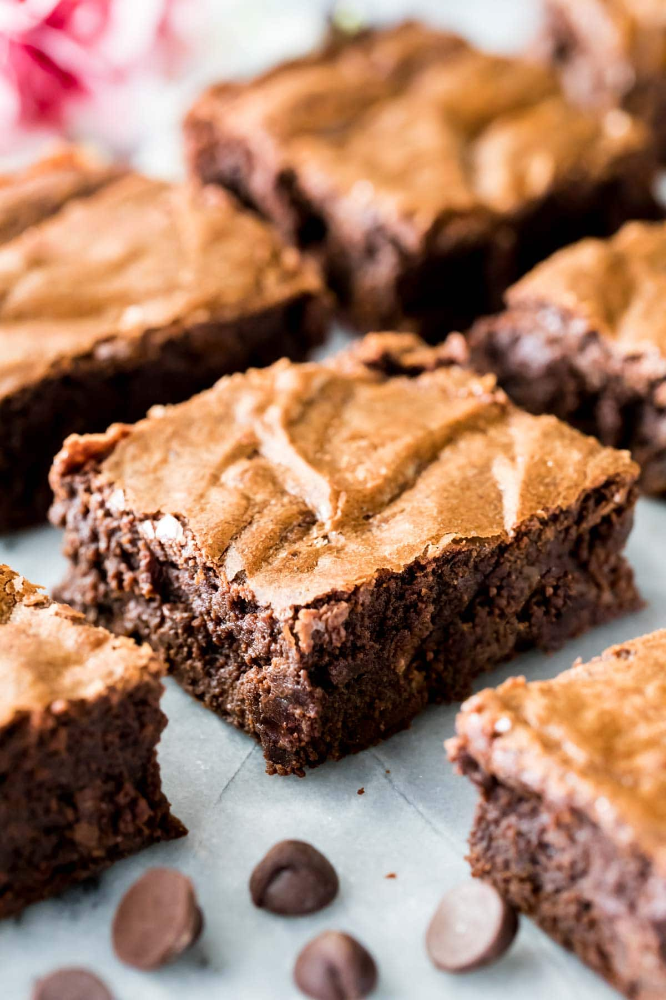

Brownies

Description
If you love chocolate, then you also might like brownies! This recipe is super chewy and moist in the inside! Warm brownies are perfect for snowy, winter days.
Ingredients
- 12 tbsp unsalted butter cut into Tablespoon-sized pieces
- 1/2 cup semisweet chocolate chips
- 1/2 cup natural cocoa powder (unsweetened)
- 3/4 cup sugar
- 3/4 cup firmly packed light brown sugar
- 2 large eggs + 1 large egg yolk
- 1 tsp vanilla extract
- 1/2 tsp salt
- 1 cup all-purpose flour
- 3/4 cup semisweet chocolate chips
Steps
- Preheat oven to 350F and line a 9x9 baking pan with parchment paper.
- Combine butter and semisweet chocolate chips in a large, microwave-safe bowl.
- Microwave for 30 seconds. Stir well, microwave for another 15 seconds and then stir well again. Repeat for 15 seconds until chocolate and butter are completely melted and well-combined.
- Add cocoa powder and stir well.
- Add sugars and stir until completely combined.
- Add eggs, one at a time. After each addition, stir well, and then stir another 30 seconds (the better you stir your batter, the cracklier your brownie tops will be).
- Stir in vanilla extract and salt.
- Add flour, stir until completely combined. You cannot overmix this batter, make sure it is mixed very well.
- stir in chocolate chips.
- Spread into prepared 9x9 pan.
- Remove from refrigerator and bake on 350F (177C) for 30-35 minutes or until a toothpick inserted in center comes out slightly fudgy, but not wet with batter.
- Allow to cool before cutting and serving.
Return to Main Page